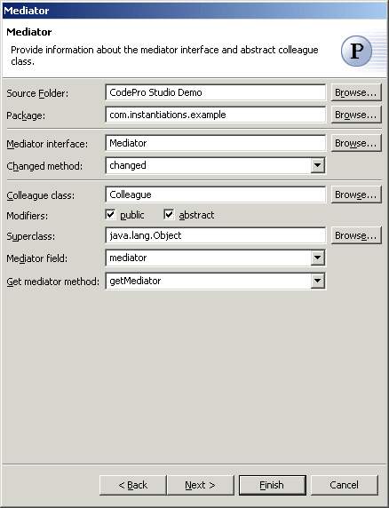
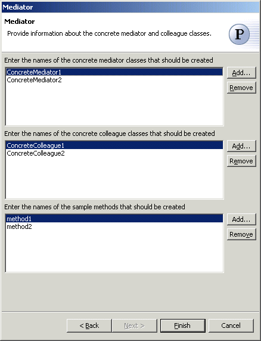

Mediator Pattern
The  Mediator Pattern define an object that encapsulates how a set of objects
interact. Mediator promotes loose coupling by keeping objects from referring
to each other explicitly, and it lets you vary their interaction
independently.
Mediator Pattern define an object that encapsulates how a set of objects
interact. Mediator promotes loose coupling by keeping objects from referring
to each other explicitly, and it lets you vary their interaction
independently.
A mediator is responsible for controlling and coordinating the interactions of a group of objects. The mediator serves as an intermediary that keeps objects in the group from referring to each other explicitly. The objects only know the mediator, thereby reducing the number of interconnections.
Wizard

| Option | Description | Default |
| Source folder | Enter a source folder for the new class. Either type a valid source folder path or click Browse to select a source folder via a dialog. | The source folder of the element that was selected when the wizard was started. |
| Package | Enter a package to contain the new class. Either type a valid package name or click Browse to select a package via a dialog. | The package of the element that was selected when the wizard has been started. |
| Mediator interface | Type or click Browse to select a mediator interface. | <Mediator> |
| Changed method | Type or select the name of the method that will be called when something has changed. | <changed> |
| Colleague interface | Type or click Browse to select a colleague class. | <Colleague> |
| Modifiers | Select one or more access modifiers for the new class.
|
public |
| Superclass | Type or click Browse to select a superclass for this class. | <java.lang.Object> |
| Mediator field | Type or select the name of the field that will contain the instance of the mediator class | <mediator> |
| Get mediator method | Type or select the name of the method that will return the instance of the mediator class | <getMediator> |

| Option | Description | Default |
| Concrete mediator classes | Click Add to enter names of concrete mediator classes that should be created. | <blank> |
| Concrete colleague classes | Click Add to enter names of concrete colleague classes that should be created. | <blank> |
| Method names | Click Add to enter names of sample methods that should be created in the concrete colleague classes | <blank> |
Applicability
Use the Mediator pattern when
- a set of objects communicate in well-defined but complex ways. The resulting interdependencies are unstructured and difficult to understand.
- reusing an object is difficult because it refers to and communicates with many other objects.
- a behavior that's distributed between several classes should be customizable without a lot of subclassing.
Additional Resources
http://c2.com/cgi/wiki?MediatorPattern
http://www.wikipedia.org/wiki/Mediator_pattern